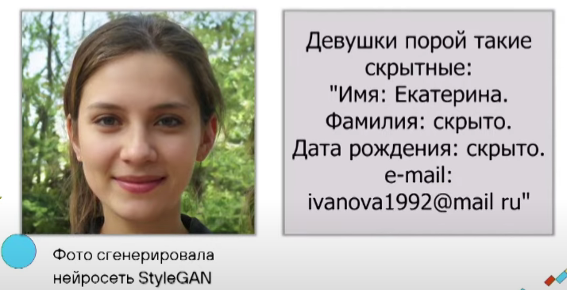
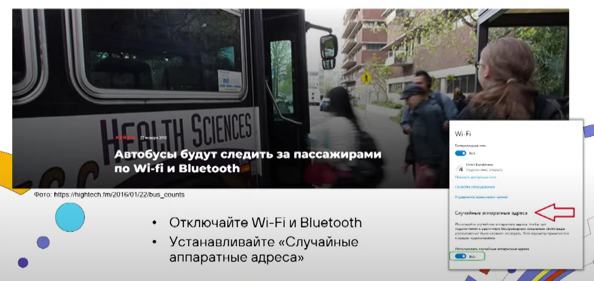
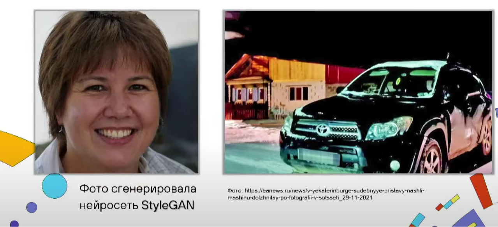
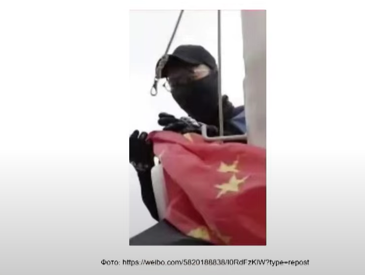
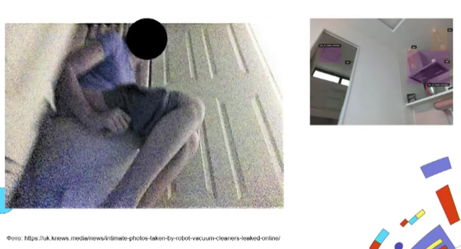
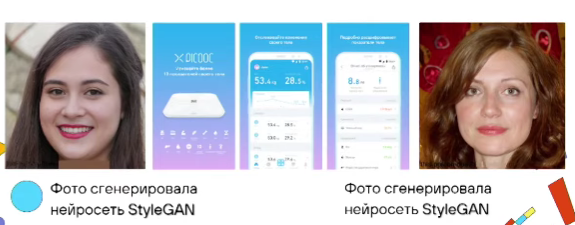
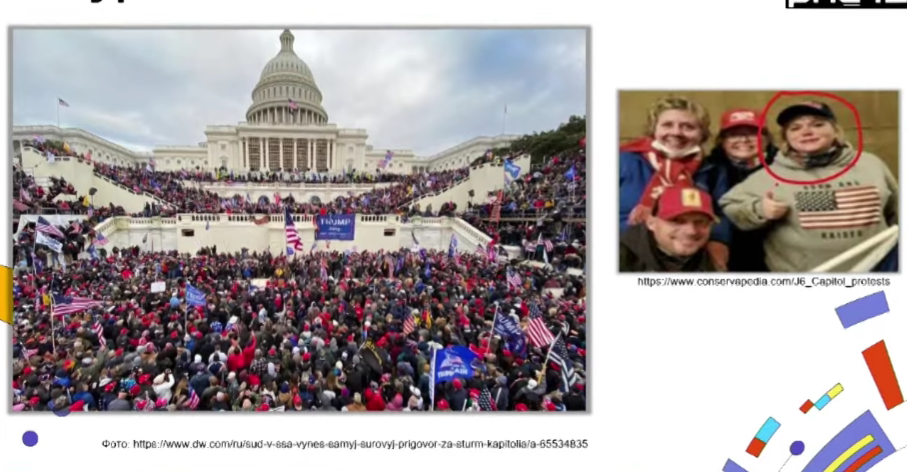
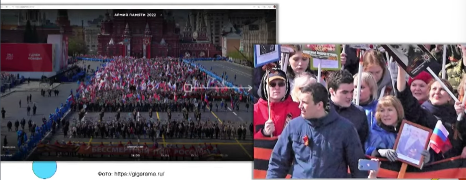
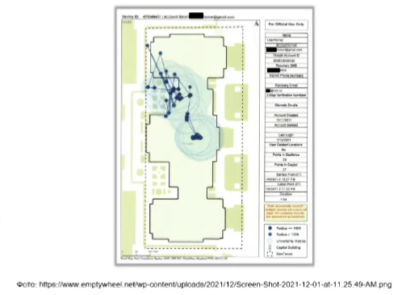
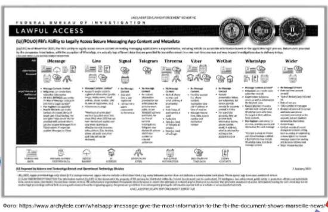

Доклад с форума PHD12
Мы знаем, что вы делали прошлым летом: как узнать ВСЕ о человеке по открытым источникам
Автор доклада - Андрей Масалович, компания - АО “Инфорус”
Доклад основан на реальных примерах, все фотографии реальных людей сгенерированы нейросетью.
Пример 1 - Девушки такие скрытные…

Девушка решила выйти в интернет и, зная, что в интернете небезопасно, скрыла свои фамилию и дату рождения.
Некоторые приемы специалистов по киберразведке не очень хитрые, и в данном примере можно легко установить фамилию девушки.
Пример 2 - За вами шпионит автобус…

Если вы знаете, что за вами следят WI-FI, и стараетесь не подключаться к сети метро, то я вас огорчу: сканеры WI-FI и Bluetooth сейчас установлены и в автобусах, и в автобусных остановках. Даже если ваш телефон просто лежит в кармане, и вы проходите мимо остановки, где-то в базе данных фиксируется что данный человек в данном месте проходит через данную остановку.
Подобные приемы активно внедряют владельцы кафе и магазинов.
Чтобы защититься от данного приема, отключайте WI-FI и Bluetooth, и устанавливайте “Случайные аппаратные адреса”.
Пример 3 - Если удалиться из соцсетей…

Женщина из Екатеринбурга взяла кредит на полмиллиона рублей под залог автомобиля.
Сначала женщина исправно выплачивала кредит, однако со временем перестала и в какой-то момент исчезла из всех соц.сетей, перестала выходить на связь.
Банк начал волноваться и довел дело до судебных приставов, которые, в свою очередь, зашли в социальные сети и увидели на ее странице последнюю опубликованную фотографию с подписью: “Друзья, у меня локальные проблемы, я на время исчезну, но не пугайтесь, со мной все хорошо, скоро вернусь.”
Среди судебных приступов оказались люди, которые разбираются в киберразведке. Им не составило труда вычислить местоположение женщины и изъять автомобиль.
Пример 4 - Анонимный герой не использовал гаджеты..
Пару лет назад в Гонконге была вторая волна протестов, называемая “Революция зонтиков”, Некий безымянный герой залез на небоскреб и сорвал с него китайский флаг, получилась вирусная фотография, которая быстро разлетелась по интернету:

Соответственно, возникло желание определить безымянного героя. На первый взгляд, сделать это было очень сложно, так как у него не было с собой никаких средств фиксации, средств, содержащих батарейки (даже фонарика), он был среднего китайского роста, средней комплекции, у него было закрыто лицо, на нем была надета кепка и перчатки, он не оставил никакх отпечатков.
Единственное, за что можно было зацепиться - за характерную дужку на очках. Полицейский, который расследовал данное дело, зашел в интернет и начал смотреть, кто и когда выкладывал фотографию, кто её первым подхватывал.
В интернете, когда делается целенаправленный вброс, то те, кто его подхватывает в первые минуты, это, как правило, одна сетка - люди, которые между собой взаимосвязаны, друг другу знают и свои действия координируют.
При просмотре комментариев и репостов полицейский почти сразу нашел страницу молодого человека - Чшоу Ишуань, у которого была выложена эта фотография с подписью “Хе-хе, угадайте, кто это сделал.”
Пример 5 - Шпионит робот-пылесос

На фотографии изображена девушка из Южной Америки, которая купила дорогой робот-пылесос. (Дешёвые роботы-пылесосы такого пока не умеет) И вдруг обнаружила свой снимок, где она сидит в туалетной комнате с открытым лицом, в интернете.
Выяснив, что такие фотографии делает робот-пылесос, девушка пришла к фирме с претензией.
Фирма, которая производит пылесосы, не умеет работать с нейросетями и передает снимки в другую фирму, которая настраивает нейросеть, которые в свою очередь передают снимки студентам-волонтерам. Одному из студентов показалось это фото прикольным, и он его выложил. Это то, что нас ждет.
Пример 6 - Шпионят гаджеты: умные гаджеты сдали неверного мужа

Данный пример случился в России. Женщина отправилась на выходные к маме, а муж остался дома один. В субботу утром у женщины на руке завибрировал фитнес-браслет и хвалил ее за хорошо проведенную неделю и хорошие физические параметры. Женщина решила проверить и выяснила, что браслет ссылается на весы. И согласно данным с весов, женщина весила 59 кг, что для нее было слишком хорошим показателем, и что примерно меньше на 50 кг, чем у ее мужа. Так она поняла, что в её квартире находится другая девушка.
Пример 7 - Штурм Капитолия - 06.01.2021
Каждое наше действие оставляет цифровой след и данный пример иллюстрирует, как сейчас этим пользуются спецслужбы:

6 января 2021 года была неудачная попытка штурмовать Капитолий, после которой власти объявили, что каждый участник пойдет под суд в зависимости от личной степени участия.
ФБР открыло около 1,5 тысяч личных дел. Первой под суд пошла очень непреметная женщина, которая не лезла под камеры и стояла в толпе.
Как ФБР удалось так быстро найти женщину в этой толпе?
- 1 технология - использование фотографий сверхвысокого разрешения.

- 2 технология - данные со смартфонов о перемещении. (100 точек в час)

- 3 технология - COPM: переход от Lawful Interception к Lawful Access.

Больше всех сливает Apple - отдаёт все, меньше всех китайский WeChat.
Что делать для собственной безопасности?
“Враг знает систему” (интерпретация 2-го закона Керкгоффса)
Не используйте в работе системные знания, один и тот же пароль. Сколько сервисов - столько паролей.
“Вокруг нас дебилы” (интерпретация 6-го закона Керкгоффса)
Вас сдадут ваши друзья и коллеги.
“Среду нулевого доверия” (Zero Trust)
Любой человек вокруг вас - враг. Ваше устройство заражено, ваш смартфон следит за вами.